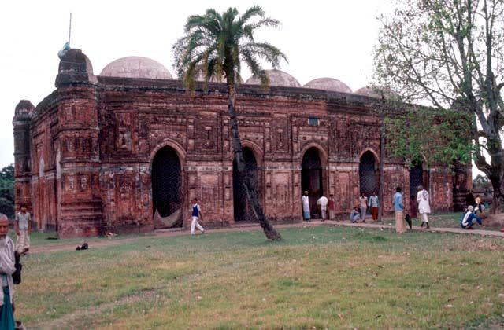
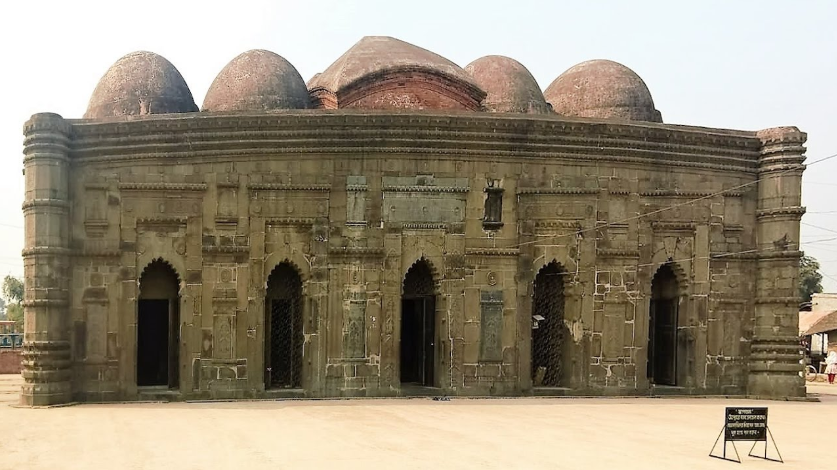
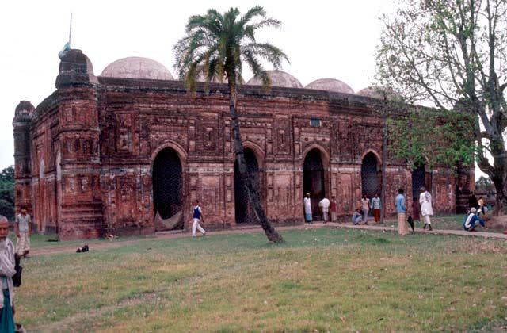
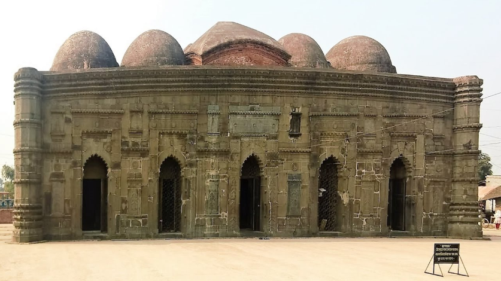
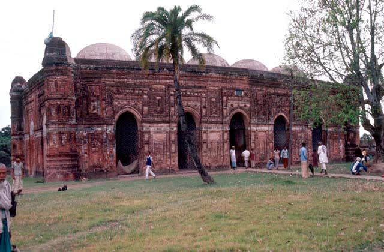
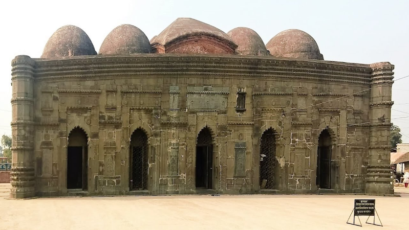
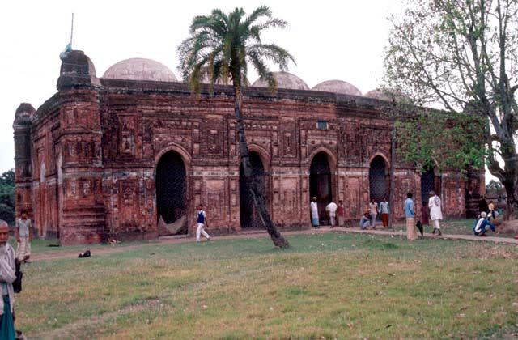
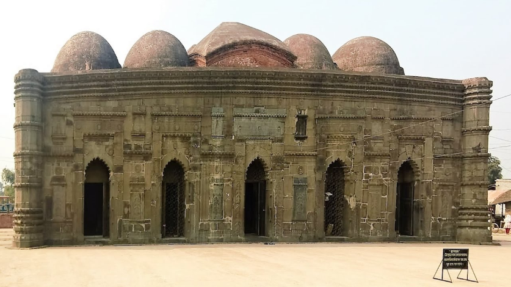

Bagha Mosque (Bengali: বাঘা মসজিদ) is a mosque located at Bagha, 40 kilometres (25 mi) southeast of Rajshahi in Bangladesh. It is a great historical place in Bangladesh. It has wonderful architectural style.[2]
Bagha Mosque situated at Bagha, about 40km southeast of Rajshahi town, survives in a fairly good state of preservation. The mosque was built on the western bank of a fairly large tank within a brick-walled compound, 48.77m square. The mosque compound could be entered by two old arched gateways - one on the north and the main one on the south comprising a simple oblong curved structure with a turret on either side. This brick-built mosque, now a protected monument of the Department of Archaeology, Bangladesh, is an oblong structure measuring externally about 23.16m by 12.80m.
The four exterior angles of the building are emphasised with octagonal towers, divided into sections by moulded bands and topped over with polygonal solid cupolas. The cornice of the building is gently curved in the Bengali fashion. Bagha Mosque, Rajshahi There are five arched openings in the east and two in both have the south and north sides. Inside the mosque there are three mihrabs at the western end of the three southern bays, a panelled design in the fourth and a smaller mihrab in the raised gallery in the northwestern corner. The interior of the mosque is divided into two longitudinal aisles and five bays by a row of four stone pillars. The mosque has therefore ten independent square divisions, each being covered by an inverted cup-shaped dome. The department of archaeology has reconstructed the present domed roof, as the original roof had collapsed in the earthquake of 1897. The domes are carried on intersecting arches springing from stone pillars and engaged stone pilasters. It is important to note that the stone blocks in the form of a lintel at the springing point of the doorway arches run all round the building, which gives the mosque a two-storied appearance from outside. The mosque is noteworthy for its exquisite terracotta ornamentation. Although much of the ornamentation has already disappeared, quite a bit still exists both in the interior and exterior of the building. All the archways and mihrabs are set within decorated rectangular frames, while the spaces around the mihrabs and archways are enriched with highly ornate rectangular panels, one above the other. One such panel in the eastern facade is encircled by a frame of tendrils and contains an exuberant engrailed and floreate arch. From the apex of this arch hangs a conventionalised chain motif, which ultimately evolves into a fantastic grape-cluster. The mihrabs consist of deep recesses and are faced with beautiful engrailed arches carried on decorated faceted pillars. The deep recesses are divided by raised mouldings into rows of rectangular small panels, each embellished with cusped arches containing varieties of designs. The spandrels of the mihrab arches are enriched with flower vases, out of which rise vine-like scrolls and leaves intertwining boldly projected rosettes. The whole composition is enclosed within a rectangular frame filled with a series of decorated rectangular panels. A window grill of the building is marked with a fine design of intersecting circles and diagonals. The faceted corner towers are also enriched with varieties of terracotta designs. It is interesting to note that the additional prayer chamber created by means of a raised platform in the north-west corner within the building appears to have been an exclusive gallery for the governor who ruled the area as a nominee of the reigning sultan. This sort of special prayer chamber, noticed in some other Bengal mosques, appears to have been meant as a substitute of maqsura - a feature introduced in the mosque architecture of early Islam for the safety of the caliphs. This particular feature of the Bagha mosque has given it the status of a Jami mosque. An inscription, which was originally fixed over the central archway of this building (now in Karachi), records its construction by Sultan nusrat shah in 1523 AD. [MA Bari]